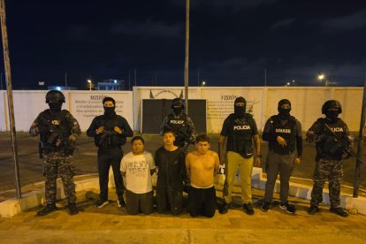

En Santa Elena caen presuntos Choneros que extorsionaban a comerciante: ¿cuánto le exigían?
Uno de los detenidos registraba antecedentes penales. La víctima recibía mensajes y llamadas extorsivas a través de WhatsApp.
Durante intervención en Santa Elena fueron capturados presuntos extorsionadores.
En un operativo ejecutado la madrugada del 8 de mayo de 2026, la Policía aprehendió a tres sujetos en el cantón Santa Elena, tras una investigación por el presunto delito de extorsión en contra de una comerciante de la localidad.
El procedimiento se desarrolló a las 02:30 en el circuito San Pablo, subcircuito San Pablo 1, en el distrito Santa Elena, con apoyo de unidades de inteligencia y ciberinteligencia.
La denunciante, de 48 años, comerciante ecuatoriana, informó que desde el 5 de mayo venía recibiendo mensajes y llamadas extorsivas a través de WhatsApp, en los que sujetos desconocidos le exigían el pago de 10.000 dólares a cambio de no atentar contra su vida, la de su familia y su negocio.
Tras la denuncia, personal especializado de la Unase activó los protocolos de investigación y negociación, lo que permitió identificar a los presuntos responsables mediante labores de campo y análisis tecnológico.

Los detenidos fueron puestos a órdenes de la Policía.
Operativo dejó tres aprehendidos
Como resultado del operativo fueron aprehendidos:
Luis Alejandro Pozo Torres, de 19 años, quien registra denuncias por estafa en la Fiscalía General del Estado (2024), aunque no posee antecedentes penales.
Marbin Francisco Falcone Quintero, de 21 años, sin antecedentes.
Allan Josué Martinetty de la Rosa, de 23 años, sin antecedentes.
Los tres ciudadanos, presuntos integrantes de una organización delictiva Los Choneros, fueron trasladados a un centro de salud para su valoración médica y posteriormente puestos a órdenes de la autoridad competente.
Como indicios se levantaron tres terminales móviles, que serán sometidos a peritajes tecnológicos.
La Policía continúa con las investigaciones para determinar si existen más personas involucradas en este hecho delictivo.